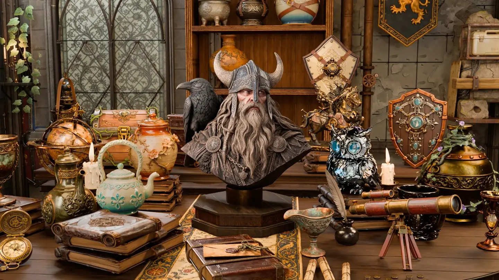
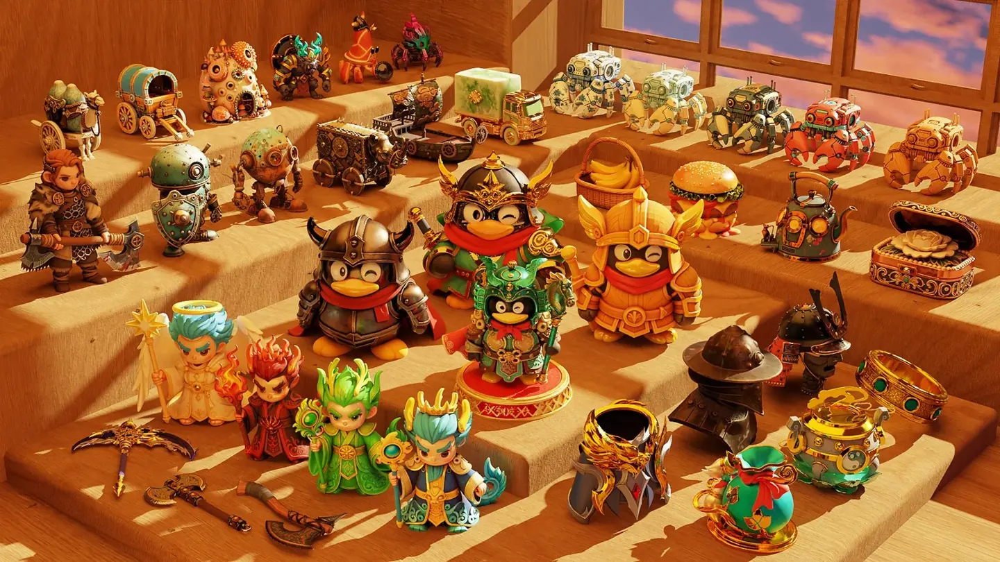
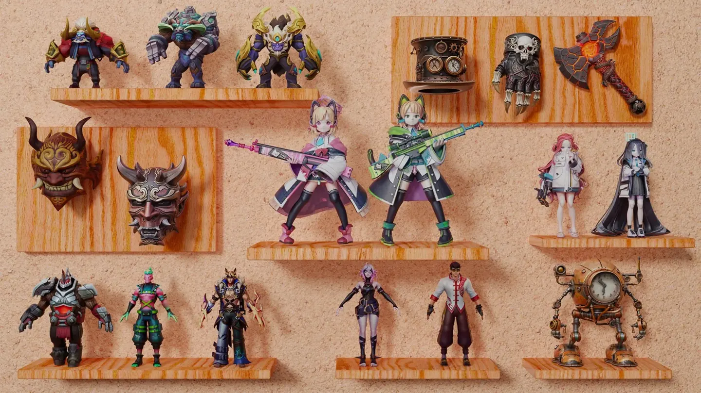

Education
I'm studying computer science at UIUC. Before that, I received my bachelor's degree from CUHK-Shenzhen.
I'm a student at UIUC, and I love art and design.
Welcome to my personal page! Here are some of my figurine design images.
See my designsI'm studying computer science at UIUC. Before that, I received my bachelor's degree from CUHK-Shenzhen.
I love art and design. I enjoy trying different colors, shapes, and small details to give a character its own personality.
I like fantasy characters and colorful figurines. This page is a small collection of my designs and the styles I enjoy.
Here are three of my figurine design images. Use the arrows to see each one.

A fantasy-style figure in a workshop full of small details.

A collection of cheerful figures with bright colors and different shapes.

Different characters, costumes, and details in one display.
1 / 3
A short video of the fantasy workshop and its details.